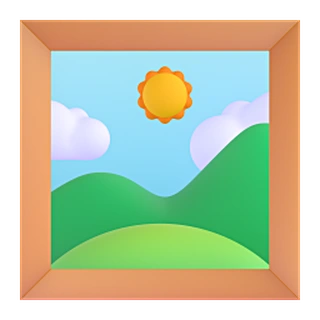
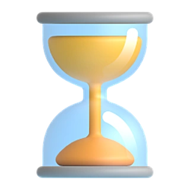
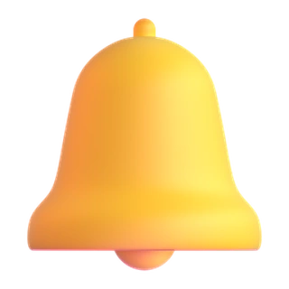

Anuncios en Meta

Tu anuncio no vende por uno de estos 5 errores
Desliza: los 5, en orden.
Del más fácil de arreglar al que casi nadie ve venir.
1
Vender «calidad y servicio»
Lo que no funciona"Calidad y el mejor servicio de Miami."
Lo que síDi qué se llevan: "2 por 1 los martes".

2
Subir un solo creativo
Sube tres versiones. En unos días, Meta le pasa el presupuesto a la que mejor funciona, sola.
El 3 lo comete casi todo el mundo el primer día

3
Tocarlo los primeros días
Los primeros días Meta está aprendiendo a quién mostrarlo, y los números todavía no dicen nada.
Si lo cambias, vuelve a empezar. Dale tres días.
4
Pedir clics si quieres ventas
Meta busca exactamente lo que le pides. Si le pides clics, te trae a quien toca barato, no a quien compra.
Y el 5 casi nadie lo ve venir

5
No mirarlo hasta fin de mes
Si Meta lo frena (un pago pendiente, un texto que no aprueba) y no te enteras, pierdes días de ventas.
Lo que síMíralo cada día, o que una app te avise apenas pase.
Si llegaste hasta aquí:
Judito te guía al armar tu anuncio y te avisa si Meta lo frena.
Pruébalo gratis 14 díasjudomarketing.net/juditoads